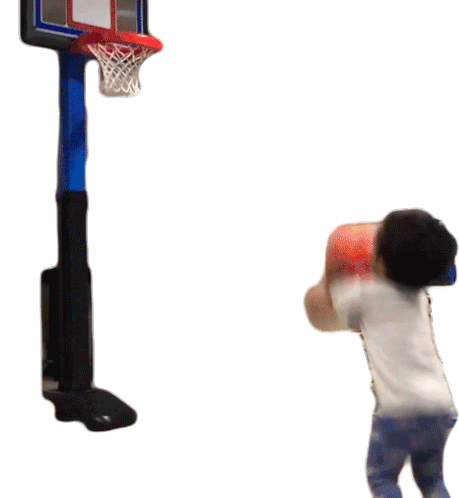

Please join us in celebrating Alex’s birthday with an afternoon of everyone’s favorite schoolyard
blacktop basketball elimination game, KNOCK OUT!

When & Where
Saturday March 19, 11am
Hanging out, eating pies for lunch and dessert, and a bit of hoops
Alberta Park basketball courts near Killingsworth & NE 22nd
The Fine Print
Participation in physical recreation not required; picnicking and children encouraged; we’ll bring
some drinks and savory and sweet pies in honor of Alex’s 3/14 birthday–if you want to bring a pie too, that sort of thing is encouraged, but no pressure!
I want to play but my basketball skills make Mr Magoo look like Shaq, is that a problem?
Not at all! The goal here is "casual, fun game", not "cutthroat competition", and you will not be alone.
What if I am a literal NBA player?
If you're that good, you'll have to start from three point distance instead of the free throw
line. Halfcourt if you're Damian Lillard. Also, can I have some tickets to the next game? As a
birthday present?
Rules of knockout
Everyone forms one line behind the cone a few feet behind the foul line, facing the basket.
The first two players in line get a ball.
The point of the game is for the second player to make a basket before the person in front of them.
The first player takes their first shot from the foul line.
As soon as the first player attempts the first shot, the second player may attempt a shot from the foul line.
If a player misses their first shot from the foul line, they may then rebound and shoot from anywhere on the court.
Both players are trying to be the first to make a basket.
If the second player makes it before the first player, the first player in line was "knocked out.
Both players pass their balls to the front of the line and then walk to the end of the line.
If first player makes a basket first, the player second continues shooting.
The first layer passes the ball to the next person in line and goes to the end of the line.
The next person in line shoots a foul shot, now trying to a basket before the player still on the court.
Once a player scores or is knocked out they should pass their ball to the next person in line as quickly as possible.
Players can knock each other's basketballs with their own ball. This can only be done when the ball is in the air (not in another player's hands)